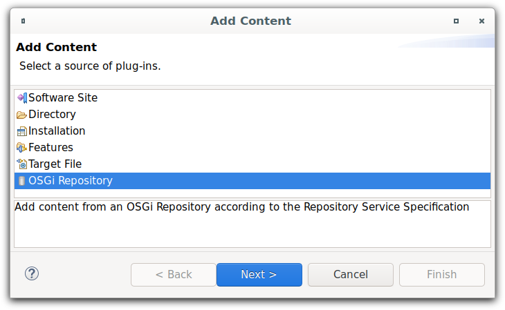
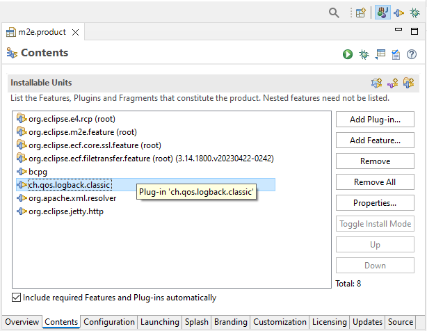
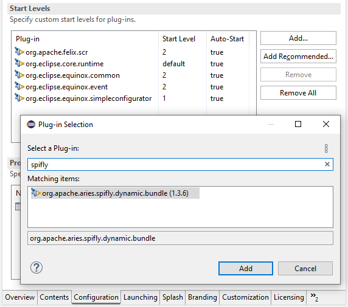

Dialogs, Wizards and Views |
|
Editors |
|
| New OSGi Repository Target Location Type |
The OSGi Specification defines an XML format for representing a repository,
as defined in the Repository Service Specification,
to provide access to external resources based on their associated requirements and capabilities.
Such a repository typically contains a set of bundles and is analogous to what is provided by a p2 update site.
To facilitate PDE's integration with such OSGi standard repositories,
a new target location type OSGi Repository is supported.
 |
| Support for Mixed Products |
The PDE Product Configuration Editor now supports mixed products, which consist of both plug-ins and features.
To exploit this new capability, use the Overview page of the editor to select the following radio button:
You can then add both plug-ins and features to the product on the
You can launch mixed products from the IDE as usual via shortcuts on the  |
| Enhanced Start Levels Configuration in Products |
The specification of plug-in Start Levels on the Configuration page of the PDE Product Configuration Editor has been enhanced.
 |
API Tools |
|
PDE Compiler |
|